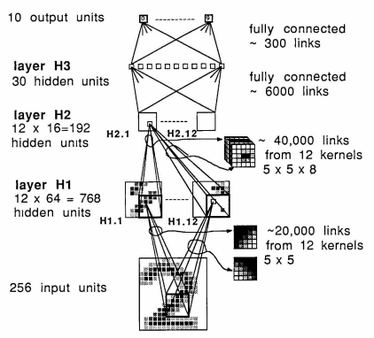

LeNet-1 with Keras (and PyTorch)¶
Good readings:
Preparations¶
As usual, let’s start with the following preparations.
import numpy as np
import matplotlib.pyplot as plt
import os
os.environ["KERAS_BACKEND"] = "torch"
# Importing necessary libraries
import keras
from keras.datasets import mnist
from keras.layers import Conv2D, MaxPooling2D, AveragePooling2D
from keras.layers import Dense, Flatten
from keras.models import Sequential
USPS Dataset¶
The first paper on LeNet-1 used the USPS dataset. We will load and format the dataset. As the results, we will have n samples of (16 x 16) arrays for both the training and testing datasets.
import h5py
with h5py.File("./datasets/usps/usps.h5", 'r') as hf:
x_train = hf.get("train").get('data')[:].reshape(-1, 16, 16) * 255.0
y_train = np.int32(hf.get("train").get('target')[:])
x_test = hf.get("test").get('data')[:].reshape(-1, 16, 16) * 255.0
y_test = np.int32(hf.get("test").get('target')[:])
print("Training data:")
print("Dimension numbers :", x_train.shape[1] * x_train.shape[2])
print("Number of data :", x_train.shape[0])
print("\nTesting data:")
print("Dimension numbers :", x_test.shape[1] * x_test.shape[2])
print("Number of data :", x_test.shape[0])
Training data:
Dimension numbers : 256
Number of data : 7291
Testing data:
Dimension numbers : 256
Number of data : 2007
Here, we convert a flattened data back into a 2d matrix.
# Peforming reshaping operation
x_train = x_train.reshape(x_train.shape[0], 16, 16, 1)
x_test = x_test.reshape(x_test.shape[0], 16, 16, 1)
# One Hot Encoding
y_train = keras.utils.to_categorical(y_train, 10)
y_test = keras.utils.to_categorical(y_test, 10)
Let’s plot some of the data for visualization purposes.
for i in range(100):
X = x_train[i,:,:]
plt.subplot(20, 10, i + 1)
plt.imshow(X.astype('uint8'), cmap='Greys')
plt.axis('off')
Building the Model Architecture¶
All kerenels are 5 x 5. To maintain the image dimension, we apply two layers of zero-padding. The stride length for the convolution is 1.
Down sizing the features are done by using max pooling with a window of 2 x 2 and a stride length of 2.

Create the Keras sequential model based on the model architecture diagram.
The sequential order of the CNN is as follows:
input --> C1 --> reLU --> M1 --> C2 --> ReLU --> M2 --> FCN
where C and M are convolutional and max-pooling layers, respectively. FCN is a fully-connected network layer.
model = Sequential()
model.add(keras.layers.ZeroPadding2D(padding=(2, 2)))
model.add(Conv2D(12, kernel_size=(5, 5), activation='relu', input_shape=(20, 20, 1), name='C1'))
model.add(MaxPooling2D(pool_size=(2, 2), name='M1'))
model.add(keras.layers.ZeroPadding2D(padding=(2, 2)))
model.add(Conv2D(12, kernel_size=(5, 5), activation='relu', name='C2'))
model.add(MaxPooling2D(pool_size=(2, 2), name='M2'))
model.add(Flatten())
model.add(Dense(192, activation='relu'))
model.add(Dense(30, activation='relu'))
model.add(Dense(10, activation='softmax'))
/home/auralius/miniconda3/envs/py.3.12.4/lib/python3.12/site-packages/keras/src/layers/convolutional/base_conv.py:113: UserWarning: Do not pass an `input_shape`/`input_dim` argument to a layer. When using Sequential models, prefer using an `Input(shape)` object as the first layer in the model instead.
super().__init__(activity_regularizer=activity_regularizer, **kwargs)
Compile and Train¶
model.compile(loss=keras.metrics.categorical_crossentropy, optimizer=keras.optimizers.Adam(), metrics=['accuracy'])
model.fit(x_train, y_train, batch_size=64, epochs=30, verbose=2, validation_data=(x_test, y_test));
Epoch 1/30
114/114 - 2s - 14ms/step - accuracy: 0.5046 - loss: 5.8720 - val_accuracy: 0.8092 - val_loss: 0.6761
Epoch 2/30
114/114 - 1s - 13ms/step - accuracy: 0.9151 - loss: 0.3012 - val_accuracy: 0.9118 - val_loss: 0.3488
Epoch 3/30
114/114 - 2s - 13ms/step - accuracy: 0.9580 - loss: 0.1443 - val_accuracy: 0.9238 - val_loss: 0.3298
Epoch 4/30
114/114 - 1s - 13ms/step - accuracy: 0.9738 - loss: 0.0861 - val_accuracy: 0.9287 - val_loss: 0.2948
Epoch 5/30
114/114 - 2s - 13ms/step - accuracy: 0.9835 - loss: 0.0529 - val_accuracy: 0.9332 - val_loss: 0.3492
Epoch 6/30
114/114 - 1s - 13ms/step - accuracy: 0.9907 - loss: 0.0358 - val_accuracy: 0.9292 - val_loss: 0.3390
Epoch 7/30
114/114 - 2s - 14ms/step - accuracy: 0.9916 - loss: 0.0303 - val_accuracy: 0.9427 - val_loss: 0.2849
Epoch 8/30
114/114 - 2s - 13ms/step - accuracy: 0.9922 - loss: 0.0232 - val_accuracy: 0.9397 - val_loss: 0.2777
Epoch 9/30
114/114 - 1s - 13ms/step - accuracy: 0.9944 - loss: 0.0191 - val_accuracy: 0.9392 - val_loss: 0.3152
Epoch 10/30
114/114 - 2s - 13ms/step - accuracy: 0.9964 - loss: 0.0132 - val_accuracy: 0.9432 - val_loss: 0.3185
Epoch 11/30
114/114 - 2s - 15ms/step - accuracy: 0.9945 - loss: 0.0171 - val_accuracy: 0.9462 - val_loss: 0.3240
Epoch 12/30
114/114 - 2s - 14ms/step - accuracy: 0.9901 - loss: 0.0333 - val_accuracy: 0.9432 - val_loss: 0.3132
Epoch 13/30
114/114 - 2s - 15ms/step - accuracy: 0.9942 - loss: 0.0184 - val_accuracy: 0.9442 - val_loss: 0.2947
Epoch 14/30
114/114 - 2s - 15ms/step - accuracy: 0.9925 - loss: 0.0179 - val_accuracy: 0.9447 - val_loss: 0.2959
Epoch 15/30
114/114 - 2s - 16ms/step - accuracy: 0.9960 - loss: 0.0133 - val_accuracy: 0.9467 - val_loss: 0.3110
Epoch 16/30
114/114 - 2s - 14ms/step - accuracy: 0.9937 - loss: 0.0198 - val_accuracy: 0.9437 - val_loss: 0.3561
Epoch 17/30
114/114 - 2s - 15ms/step - accuracy: 0.9966 - loss: 0.0102 - val_accuracy: 0.9307 - val_loss: 0.4619
Epoch 18/30
114/114 - 2s - 15ms/step - accuracy: 0.9933 - loss: 0.0227 - val_accuracy: 0.9507 - val_loss: 0.3248
Epoch 19/30
114/114 - 2s - 18ms/step - accuracy: 0.9888 - loss: 0.0396 - val_accuracy: 0.9452 - val_loss: 0.2900
Epoch 20/30
114/114 - 2s - 16ms/step - accuracy: 0.9957 - loss: 0.0144 - val_accuracy: 0.9502 - val_loss: 0.3179
Epoch 21/30
114/114 - 2s - 15ms/step - accuracy: 0.9967 - loss: 0.0112 - val_accuracy: 0.9492 - val_loss: 0.3315
Epoch 22/30
114/114 - 2s - 14ms/step - accuracy: 0.9986 - loss: 0.0064 - val_accuracy: 0.9571 - val_loss: 0.2829
Epoch 23/30
114/114 - 2s - 14ms/step - accuracy: 0.9993 - loss: 0.0032 - val_accuracy: 0.9542 - val_loss: 0.2835
Epoch 24/30
114/114 - 1s - 13ms/step - accuracy: 0.9999 - loss: 0.0017 - val_accuracy: 0.9532 - val_loss: 0.2716
Epoch 25/30
114/114 - 1s - 13ms/step - accuracy: 0.9997 - loss: 0.0013 - val_accuracy: 0.9512 - val_loss: 0.2727
Epoch 26/30
114/114 - 1s - 13ms/step - accuracy: 0.9996 - loss: 0.0017 - val_accuracy: 0.9542 - val_loss: 0.2890
Epoch 27/30
114/114 - 1s - 13ms/step - accuracy: 0.9996 - loss: 0.0023 - val_accuracy: 0.9557 - val_loss: 0.2832
Epoch 28/30
114/114 - 1s - 13ms/step - accuracy: 0.9992 - loss: 0.0025 - val_accuracy: 0.9542 - val_loss: 0.3114
Epoch 29/30
114/114 - 1s - 13ms/step - accuracy: 0.9993 - loss: 0.0027 - val_accuracy: 0.9527 - val_loss: 0.2945
Epoch 30/30
114/114 - 1s - 13ms/step - accuracy: 0.9995 - loss: 0.0025 - val_accuracy: 0.9576 - val_loss: 0.2611
Test Accuracy¶
Lest evaluate the training results with the test dataset.
score = model.evaluate(x_test, y_test, verbose=2)
print('Test Loss:', score[0])
print('Test accuracy:', score[1])
63/63 - 0s - 6ms/step - accuracy: 0.9576 - loss: 0.2611
Test Loss: 0.26110780239105225
Test accuracy: 0.9576482176780701
Store the Weights to Files¶
print('\nshape of each layer:')
weights = model.get_weights()
for k in range(len(weights)):
print(model.layers[k])
print('\t', weights[k].shape)
print('-------------------------------------------------')
shape of each layer:
<ZeroPadding2D name=zero_padding2d, built=True>
(5, 5, 1, 12)
-------------------------------------------------
<Conv2D name=C1, built=True>
(12,)
-------------------------------------------------
<MaxPooling2D name=M1, built=True>
(5, 5, 12, 12)
-------------------------------------------------
<ZeroPadding2D name=zero_padding2d_1, built=True>
(12,)
-------------------------------------------------
<Conv2D name=C2, built=True>
(192, 192)
-------------------------------------------------
<MaxPooling2D name=M2, built=True>
(192,)
-------------------------------------------------
<Flatten name=flatten, built=True>
(192, 30)
-------------------------------------------------
<Dense name=dense, built=True>
(30,)
-------------------------------------------------
<Dense name=dense_1, built=True>
(30, 10)
-------------------------------------------------
<Dense name=dense_2, built=True>
(10,)
-------------------------------------------------
for k in range (len(weights)):
fn = './datasets/usps/weight-' + str(k+1)
np.save(fn, weights[k])